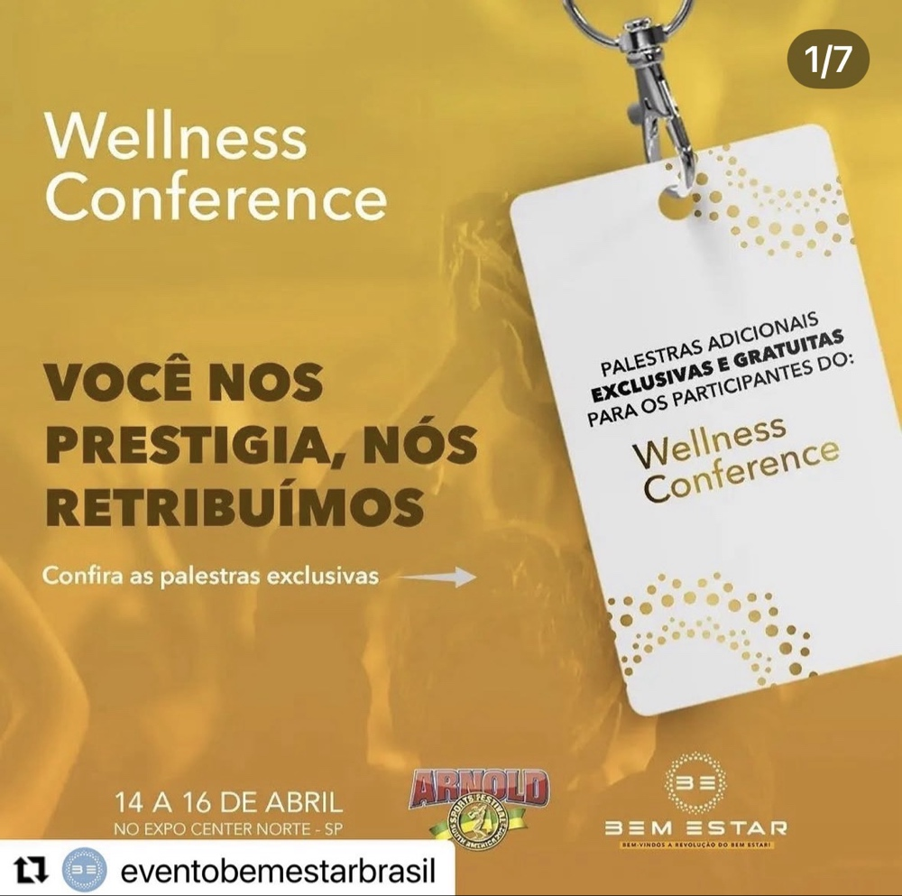
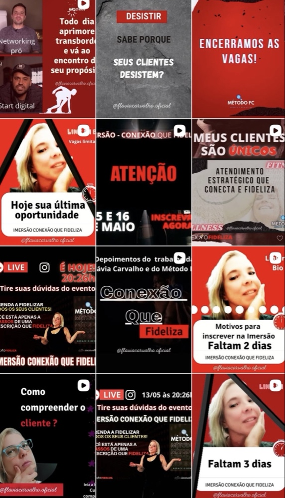
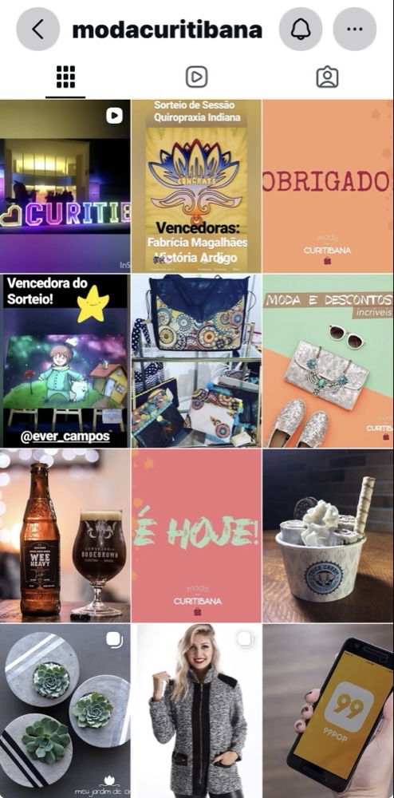

Specialist in Neuroscience, Human Behavior, and Business Strategy
This portfolio showcases my strategic leadership in the creative coordination of major projects, connecting behavioral insights to high-performance visual deliverables.
Focus: Engagement strategy and clinical authority.

Focus: Driving high-conversion campaigns centered on retention.

Focus: Conversion strategy for high-performance events.
Focus: Brand coordination and digital engagement.
